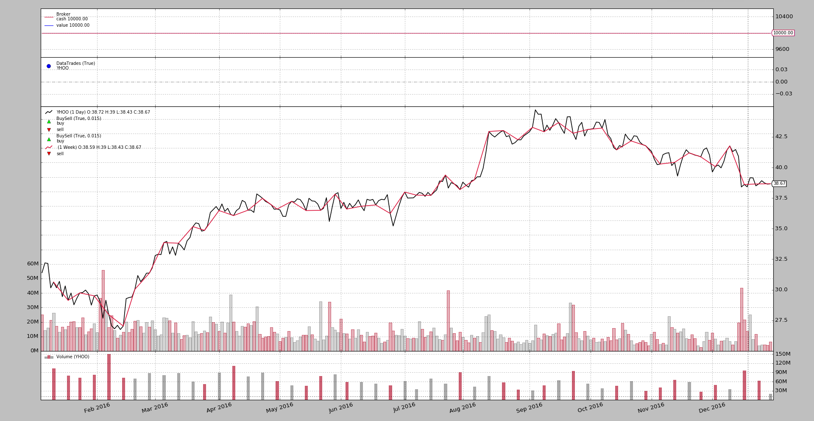

Release 1.9.42.116 adds support for Trading Calendars. This is useful
when resampling in for example the following scenarios:
Daily to Weekly resampling can now deliver the weekly bar together with the last bar of the week.
This is so because the trading calendar identifies the next trading day and the last trading day of the week can be identified in advance
Sub-daily to Daily resampling when the end of the session is not the regular one (which can already be specified to the data feed)
There is a base class TradingCalendarBase which is used as a base for any
trading calendar. It defines two (2) methods which have to be overridden:
class TradingCalendarBase(with_metaclass(MetaParams, object)):
def _nextday(self, day):
'''
Returns the next trading day (datetime/date instance) after ``day``
(datetime/date instance) and the isocalendar components
The return value is a tuple with 2 components: (nextday, (y, w, d))
where (y, w, d)
'''
raise NotImplementedError
def schedule(self, day):
'''
Returns a tuple with the opening and closing times (``datetime.time``)
for the given ``date`` (``datetime/date`` instance)
'''
raise NotImplementedError
This implementation is based on a neat package which is a spin-off of initial functionality available from Quantopian. The packages is at: pandas_market_calendars and can be easily installed:
pip install pandas_market_calendars
The implementation features the following interface:
class PandasMarketCalendar(TradingCalendarBase):
'''
Wrapper of ``pandas_market_calendars`` for a trading calendar. The package
``pandas_market_calendar`` must be installed
Params:
- ``calendar`` (default ``None``)
The param ``calendar`` accepts the following:
- string: the name of one of the calendars supported, for example
`NYSE`. The wrapper will attempt to get a calendar instance
- calendar instance: as returned by ``get_calendar('NYSE')``
- ``cachesize`` (default ``365``)
Number of days to cache in advance for lookup
See also:
- https://github.com/rsheftel/pandas_market_calendars
- http://pandas-market-calendars.readthedocs.io/
'''
params = (
('calendar', None), # A pandas_market_calendars instance or exch name
('cachesize', 365), # Number of days to cache in advance
)
This implementation allows to construct a calendar using self-gathered information by specifying the holidays, early days, non-trading weekdays and the opening and closing session times:
class TradingCalendar(TradingCalendarBase):
'''
Wrapper of ``pandas_market_calendars`` for a trading calendar. The package
``pandas_market_calendar`` must be installed
Params:
- ``open`` (default ``time.min``)
Regular start of the session
- ``close`` (default ``time.max``)
Regular end of the session
- ``holidays`` (default ``[]``)
List of non-trading days (``datetime.datetime`` instances)
- ``earlydays`` (default ``[]``)
List of tuples determining the date and opening/closing times of days
which do not conform to the regular trading hours where each tuple has
(``datetime.datetime``, ``datetime.time``, ``datetime.time`` )
- ``offdays`` (default ``ISOWEEKEND``)
A list of weekdays in ISO format (Monday: 1 -> Sunday: 7) in which the
market doesn't trade. This is usually Saturday and Sunday and hence the
default
'''
params = (
('open', time.min),
('close', _time_max),
('holidays', []), # list of non trading days (date)
('earlydays', []), # list of tuples (date, opentime, closetime)
('offdays', ISOWEEKEND), # list of non trading (isoweekdays)
)
Via Cerebro one can add a global calendar which is the default for all data
feeds, unless one is specified for the data feed:
def addcalendar(self, cal):
'''Adds a global trading calendar to the system. Individual data feeds
may have separate calendars which override the global one
``cal`` can be an instance of ``TradingCalendar`` a string or an
instance of ``pandas_market_calendars``. A string will be will be
instantiated as a ``PandasMarketCalendar`` (which needs the module
``pandas_market_calendar`` installed in the system.
If a subclass of `TradingCalendarBase` is passed (not an instance) it
will be instantiated
'''
By specifying a calendar parameter following the same conventions as
described above in addcalendar.
For example:
...
data = bt.feeds.YahooFinanceData(dataname='YHOO', calendar='NYSE', ...)
cerebro.adddata(data)
...
Let’s have a look at a sample run of the code that can be found below. In 2016,
Easter Friday (2016-03-25) was a holiday also in the NYSE. If the sample is
run with no trading calendar, let’s see what happens around that date.
In this case the resampling is being done from daily to weekly (using YHOO
and the daily data for 2016):
$ ./tcal.py
...
Strategy len 56 datetime 2016-03-23 Data0 len 56 datetime 2016-03-23 Data1 len 11 datetime 2016-03-18
Strategy len 57 datetime 2016-03-24 Data0 len 57 datetime 2016-03-24 Data1 len 11 datetime 2016-03-18
Strategy len 58 datetime 2016-03-28 Data0 len 58 datetime 2016-03-28 Data1 len 12 datetime 2016-03-24
...
In this output, the 1st date is the accounting made by the strategy. The 2nd date is that of the daily
The week ends, as expected, on 2016-03-24 (Thursday), but without a trading calendar the resampling code cannot know it and the resampled bar with date 2016-03-18 (the week before) is delivered. When the trading moves on to 2016-03-28 (Monday), the resampler detects the week change and delivers a resampled bar for 2016-03-24.
The same but run with a PandasMarketCalendar for NYSE (and adding a plot)
$ ./tcal.py --plot --pandascal NYSE
...
Strategy len 56 datetime 2016-03-23 Data0 len 56 datetime 2016-03-23 Data1 len 11 datetime 2016-03-18
Strategy len 57 datetime 2016-03-24 Data0 len 57 datetime 2016-03-24 Data1 len 12 datetime 2016-03-24
Strategy len 58 datetime 2016-03-28 Data0 len 58 datetime 2016-03-28 Data1 len 12 datetime 2016-03-24
...
There is a change! Thanks to the calendar the resampler knows the week is over on 2016-03-24 and delivers the corresponding weekly resampled bar for 2016-03-24 on the same day.
And the plot.
Since the information may not necessarily be available for each and every
market, one can also craft the calendar. For the NYSE and 2016 it looks like:
class NYSE_2016(bt.TradingCalendar):
params = dict(
holidays=[
datetime.date(2016, 1, 1),
datetime.date(2016, 1, 18),
datetime.date(2016, 2, 15),
datetime.date(2016, 3, 25),
datetime.date(2016, 5, 30),
datetime.date(2016, 7, 4),
datetime.date(2016, 9, 5),
datetime.date(2016, 11, 24),
datetime.date(2016, 12, 26),
]
)
Easter Friday (2016-03-25) is listed as one of the holidays. Running the sample now:
$ ./tcal.py --plot --owncal
...
Strategy len 56 datetime 2016-03-23 Data0 len 56 datetime 2016-03-23 Data1 len 11 datetime 2016-03-18
Strategy len 57 datetime 2016-03-24 Data0 len 57 datetime 2016-03-24 Data1 len 12 datetime 2016-03-24
Strategy len 58 datetime 2016-03-28 Data0 len 58 datetime 2016-03-28 Data1 len 12 datetime 2016-03-24
...
And the same result has been obtained with the crafted calendar definition.
Using some private intraday data and the knowledge that the market closed early
on 2016-11-25 (the day after Thanksgiving the market closed at 13:00 in
US/Eastern timezone), another test run, this time with the 2nd
sample.
Note
The source data is taken directly from the displayed data and is in
CET timeozone even if the asset in question, YHOO trades in
the USA. The tzinput='CET' and tz='US/Eastern' is used in the
code for the data feed to let the platform appropriately transform
the input and display the output
First with no trading calendar
$ ./tcal-intra.py
...
Strategy len 6838 datetime 2016-11-25 18:00:00 Data0 len 6838 datetime 2016-11-25 13:00:00 Data1 len 21 datetime 2016-11-23 16:00:00
Strategy len 6839 datetime 2016-11-25 18:01:00 Data0 len 6839 datetime 2016-11-25 13:01:00 Data1 len 21 datetime 20 16-11-23 16:00:00
Strategy len 6840 datetime 2016-11-28 14:31:00 Data0 len 6840 datetime 2016-11-28 09:31:00 Data1 len 22 datetime 2016-11-25 16:00:00
Strategy len 6841 datetime 2016-11-28 14:32:00 Data0 len 6841 datetime 2016-11-28 09:32:00 Data1 len 22 datetime 2016-11-25 16:00:00
...
As expected the day closes early at 13:00, but the resampler doesn’t know
it (the official session ends at 16:00) and keeps on delivering the
resampled daily bar from the previous day (2016-11-23) and the new resampled daily bar is first
delivered during the next trading day (2016-11-28) with a date of 2016-11-25.
Note
The data has an extra minute bar at 13:01 which is probably due
to the auction process offering a last price after the market closing
time.
We could add a filter to the stream to filter out the bars outside of the session times (the filter would find it out from the trading calendar)
But that’s not the point of this sample.
The same run with a PandasMarketCalendar instance:
$ ./tcal-intra.py --pandascal NYSE
...
Strategy len 6838 datetime 2016-11-25 18:00:00 Data0 len 6838 datetime 2016-11-25 13:00:00 Data1 len 15 datetime 2016-11-25 13:00:00
Strategy len 6839 datetime 2016-11-25 18:01:00 Data0 len 6839 datetime 2016-11-25 13:01:00 Data1 len 15 datetime 2016-11-25 13:00:00
Strategy len 6840 datetime 2016-11-28 14:31:00 Data0 len 6840 datetime 2016-11-28 09:31:00 Data1 len 15 datetime 2016-11-25 13:00:00
Strategy len 6841 datetime 2016-11-28 14:32:00 Data0 len 6841 datetime 2016-11-28 09:32:00 Data1 len 15 datetime 2016-11-25 13:00:00
...
And now the daily bar for 2016-11-25 is delivered when the intraday 1-minute feed hits 2016-11-25 at 13:00 (let’s disregard the 13:01 bar), because the trading calendar is telling the resampling code that the day is over.
Let’s add a crafted definition. The same as before but extending it with some earlydays
class NYSE_2016(bt.TradingCalendar):
params = dict(
holidays=[
datetime.date(2016, 1, 1),
datetime.date(2016, 1, 18),
datetime.date(2016, 2, 15),
datetime.date(2016, 3, 25),
datetime.date(2016, 5, 30),
datetime.date(2016, 7, 4),
datetime.date(2016, 9, 5),
datetime.date(2016, 11, 24),
datetime.date(2016, 12, 26),
],
earlydays=[
(datetime.date(2016, 11, 25),
datetime.time(9, 30), datetime.time(13, 1))
],
open=datetime.time(9, 30),
close=datetime.time(16, 0),
)
The run:
$ ./tcal-intra.py --owncal
...
Strategy len 6838 datetime 2016-11-25 18:00:00 Data0 len 6838 datetime 2016-11-25 13:00:00 Data1 len 15 datetime 2016-11-23 16:00:00
Strategy len 6839 datetime 2016-11-25 18:01:00 Data0 len 6839 datetime 2016-11-25 13:01:00 Data1 len 16 datetime 2016-11-25 13:01:00
Strategy len 6840 datetime 2016-11-28 14:31:00 Data0 len 6840 datetime 2016-11-28 09:31:00 Data1 len 16 datetime 2016-11-25 13:01:00
Strategy len 6841 datetime 2016-11-28 14:32:00 Data0 len 6841 datetime 2016-11-28 09:32:00 Data1 len 16 datetime 2016-11-25 13:01:00
...
The avid reader will notice that the crafted definition contains has defined
13:01 (with datetime.time(13, 1)) as the end of session for our short
day of 2016-11-25. This is only to show how the crafted TradingCalendar can
help into fitting things.
Now the daily resampled bar for 2016-11-25 is delivered together with the 1-minute bar at 13:01.
The first datetime, the one belonging to the strategy, is always in a
different timezone which is actually UTC. Also with this release
1.9.42.116 this can be synchronized. The following parameter has been added to
Cerebro (use either during instantiation or with cerebro.run
- ``tz`` (default: ``None``)
Adds a global timezone for strategies. The argument ``tz`` can be
- ``None``: in this case the datetime displayed by strategies will be
in UTC, which has been always the standard behavior
- ``pytz`` instance. It will be used as such to convert UTC times to
the chosen timezone
- ``string``. Instantiating a ``pytz`` instance will be attempted.
- ``integer``. Use, for the strategy, the same timezone as the
corresponding ``data`` in the ``self.datas`` iterable (``0`` would
use the timezone from ``data0``)
It is also supported with the cerebro.addtz method:
def addtz(self, tz):
'''
This can also be done with the parameter ``tz``
Adds a global timezone for strategies. The argument ``tz`` can be
- ``None``: in this case the datetime displayed by strategies will be
in UTC, which has been always the standard behavior
- ``pytz`` instance. It will be used as such to convert UTC times to
the chosen timezone
- ``string``. Instantiating a ``pytz`` instance will be attempted.
- ``integer``. Use, for the strategy, the same timezone as the
corresponding ``data`` in the ``self.datas`` iterable (``0`` would
use the timezone from ``data0``)
'''
Repeating the last run of the intraday sample and using 0 for tz
(synchronize with the timezone of data0) the following is the output
focusing on the same dates and times as above:
$ ./tcal-intra.py --owncal --cerebro tz=0
...
Strategy len 6838 datetime 2016-11-25 13:00:00 Data0 len 6838 datetime 2016-11-25 13:00:00 Data1 len 15 datetime 2016-11-23 16:00:00
Strategy len 6839 datetime 2016-11-25 13:01:00 Data0 len 6839 datetime 2016-11-25 13:01:00 Data1 len 16 datetime 2016-11-25 13:01:00
Strategy len 6840 datetime 2016-11-28 09:31:00 Data0 len 6840 datetime 2016-11-28 09:31:00 Data1 len 16 datetime 2016-11-25 13:01:00
Strategy len 6841 datetime 2016-11-28 09:32:00 Data0 len 6841 datetime 2016-11-28 09:32:00 Data1 len 16 datetime 2016-11-25 13:01:00
...
The timestamp is now timezone aligned.
$ ./tcal.py --help
usage: tcal.py [-h] [--data0 DATA0] [--offline] [--fromdate FROMDATE]
[--todate TODATE] [--cerebro kwargs] [--broker kwargs]
[--sizer kwargs] [--strat kwargs] [--plot [kwargs]]
[--pandascal PANDASCAL | --owncal]
[--timeframe {Weeks,Months,Years}]
Trading Calendar Sample
optional arguments:
-h, --help show this help message and exit
--data0 DATA0 Data to read in (default: YHOO)
--offline Read from disk with same name as ticker (default:
False)
--fromdate FROMDATE Date[time] in YYYY-MM-DD[THH:MM:SS] format (default:
2016-01-01)
--todate TODATE Date[time] in YYYY-MM-DD[THH:MM:SS] format (default:
2016-12-31)
--cerebro kwargs kwargs in key=value format (default: )
--broker kwargs kwargs in key=value format (default: )
--sizer kwargs kwargs in key=value format (default: )
--strat kwargs kwargs in key=value format (default: )
--plot [kwargs] kwargs in key=value format (default: )
--pandascal PANDASCAL
Name of trading calendar to use (default: )
--owncal Apply custom NYSE 2016 calendar (default: False)
--timeframe {Weeks,Months,Years}
Timeframe to resample to (default: Weeks)
$ ./tcal-intra.py --help
usage: tcal-intra.py [-h] [--data0 DATA0] [--fromdate FROMDATE]
[--todate TODATE] [--cerebro kwargs] [--broker kwargs]
[--sizer kwargs] [--strat kwargs] [--plot [kwargs]]
[--pandascal PANDASCAL | --owncal] [--timeframe {Days}]
Trading Calendar Sample
optional arguments:
-h, --help show this help message and exit
--data0 DATA0 Data to read in (default: yhoo-2016-11.csv)
--fromdate FROMDATE Date[time] in YYYY-MM-DD[THH:MM:SS] format (default:
2016-01-01)
--todate TODATE Date[time] in YYYY-MM-DD[THH:MM:SS] format (default:
2016-12-31)
--cerebro kwargs kwargs in key=value format (default: )
--broker kwargs kwargs in key=value format (default: )
--sizer kwargs kwargs in key=value format (default: )
--strat kwargs kwargs in key=value format (default: )
--plot [kwargs] kwargs in key=value format (default: )
--pandascal PANDASCAL
Name of trading calendar to use (default: )
--owncal Apply custom NYSE 2016 calendar (default: False)
--timeframe {Days} Timeframe to resample to (default: Days)
from __future__ import (absolute_import, division, print_function,
unicode_literals)
import argparse
import datetime
import backtrader as bt
class NYSE_2016(bt.TradingCalendar):
params = dict(
holidays=[
datetime.date(2016, 1, 1),
datetime.date(2016, 1, 18),
datetime.date(2016, 2, 15),
datetime.date(2016, 3, 25),
datetime.date(2016, 5, 30),
datetime.date(2016, 7, 4),
datetime.date(2016, 9, 5),
datetime.date(2016, 11, 24),
datetime.date(2016, 12, 26),
]
)
class St(bt.Strategy):
params = dict(
)
def __init__(self):
pass
def start(self):
self.t0 = datetime.datetime.utcnow()
def stop(self):
t1 = datetime.datetime.utcnow()
print('Duration:', t1 - self.t0)
def prenext(self):
self.next()
def next(self):
print('Strategy len {} datetime {}'.format(
len(self), self.datetime.date()), end=' ')
print('Data0 len {} datetime {}'.format(
len(self.data0), self.data0.datetime.date()), end=' ')
if len(self.data1):
print('Data1 len {} datetime {}'.format(
len(self.data1), self.data1.datetime.date()))
else:
print()
def runstrat(args=None):
args = parse_args(args)
cerebro = bt.Cerebro()
# Data feed kwargs
kwargs = dict()
# Parse from/to-date
dtfmt, tmfmt = '%Y-%m-%d', 'T%H:%M:%S'
for a, d in ((getattr(args, x), x) for x in ['fromdate', 'todate']):
if a:
strpfmt = dtfmt + tmfmt * ('T' in a)
kwargs[d] = datetime.datetime.strptime(a, strpfmt)
YahooData = bt.feeds.YahooFinanceData
if args.offline:
YahooData = bt.feeds.YahooFinanceCSVData # change to read file
# Data feed
data0 = YahooData(dataname=args.data0, **kwargs)
cerebro.adddata(data0)
d1 = cerebro.resampledata(data0,
timeframe=getattr(bt.TimeFrame, args.timeframe))
d1.plotinfo.plotmaster = data0
d1.plotinfo.sameaxis = True
if args.pandascal:
cerebro.addcalendar(args.pandascal)
elif args.owncal:
cerebro.addcalendar(NYSE_2016)
# Broker
cerebro.broker = bt.brokers.BackBroker(**eval('dict(' + args.broker + ')'))
# Sizer
cerebro.addsizer(bt.sizers.FixedSize, **eval('dict(' + args.sizer + ')'))
# Strategy
cerebro.addstrategy(St, **eval('dict(' + args.strat + ')'))
# Execute
cerebro.run(**eval('dict(' + args.cerebro + ')'))
if args.plot: # Plot if requested to
cerebro.plot(**eval('dict(' + args.plot + ')'))
def parse_args(pargs=None):
parser = argparse.ArgumentParser(
formatter_class=argparse.ArgumentDefaultsHelpFormatter,
description=(
'Trading Calendar Sample'
)
)
parser.add_argument('--data0', default='YHOO',
required=False, help='Data to read in')
parser.add_argument('--offline', required=False, action='store_true',
help='Read from disk with same name as ticker')
# Defaults for dates
parser.add_argument('--fromdate', required=False, default='2016-01-01',
help='Date[time] in YYYY-MM-DD[THH:MM:SS] format')
parser.add_argument('--todate', required=False, default='2016-12-31',
help='Date[time] in YYYY-MM-DD[THH:MM:SS] format')
parser.add_argument('--cerebro', required=False, default='',
metavar='kwargs', help='kwargs in key=value format')
parser.add_argument('--broker', required=False, default='',
metavar='kwargs', help='kwargs in key=value format')
parser.add_argument('--sizer', required=False, default='',
metavar='kwargs', help='kwargs in key=value format')
parser.add_argument('--strat', required=False, default='',
metavar='kwargs', help='kwargs in key=value format')
parser.add_argument('--plot', required=False, default='',
nargs='?', const='{}',
metavar='kwargs', help='kwargs in key=value format')
pgroup = parser.add_mutually_exclusive_group(required=False)
pgroup.add_argument('--pandascal', required=False, action='store',
default='', help='Name of trading calendar to use')
pgroup.add_argument('--owncal', required=False, action='store_true',
help='Apply custom NYSE 2016 calendar')
parser.add_argument('--timeframe', required=False, action='store',
default='Weeks', choices=['Weeks', 'Months', 'Years'],
help='Timeframe to resample to')
return parser.parse_args(pargs)
if __name__ == '__main__':
runstrat()
from __future__ import (absolute_import, division, print_function,
unicode_literals)
import argparse
import datetime
import backtrader as bt
class NYSE_2016(bt.TradingCalendar):
params = dict(
holidays=[
datetime.date(2016, 1, 1),
datetime.date(2016, 1, 18),
datetime.date(2016, 2, 15),
datetime.date(2016, 3, 25),
datetime.date(2016, 5, 30),
datetime.date(2016, 7, 4),
datetime.date(2016, 9, 5),
datetime.date(2016, 11, 24),
datetime.date(2016, 12, 26),
],
earlydays=[
(datetime.date(2016, 11, 25),
datetime.time(9, 30), datetime.time(13, 1))
],
open=datetime.time(9, 30),
close=datetime.time(16, 0),
)
class St(bt.Strategy):
params = dict(
)
def __init__(self):
pass
def prenext(self):
self.next()
def next(self):
print('Strategy len {} datetime {}'.format(
len(self), self.datetime.datetime()), end=' ')
print('Data0 len {} datetime {}'.format(
len(self.data0), self.data0.datetime.datetime()), end=' ')
if len(self.data1):
print('Data1 len {} datetime {}'.format(
len(self.data1), self.data1.datetime.datetime()))
else:
print()
def runstrat(args=None):
args = parse_args(args)
cerebro = bt.Cerebro()
# Data feed kwargs
# kwargs = dict(tz='US/Eastern')
# import pytz
# tz = tzinput = pytz.timezone('Europe/Berlin')
tzinput = 'Europe/Berlin'
# tz = tzinput
tz = 'US/Eastern'
kwargs = dict(tzinput=tzinput, tz=tz)
# Parse from/to-date
dtfmt, tmfmt = '%Y-%m-%d', 'T%H:%M:%S'
for a, d in ((getattr(args, x), x) for x in ['fromdate', 'todate']):
if a:
strpfmt = dtfmt + tmfmt * ('T' in a)
kwargs[d] = datetime.datetime.strptime(a, strpfmt)
# Data feed
data0 = bt.feeds.BacktraderCSVData(dataname=args.data0, **kwargs)
cerebro.adddata(data0)
d1 = cerebro.resampledata(data0,
timeframe=getattr(bt.TimeFrame, args.timeframe))
# d1.plotinfo.plotmaster = data0
# d1.plotinfo.sameaxis = False
if args.pandascal:
cerebro.addcalendar(args.pandascal)
elif args.owncal:
cerebro.addcalendar(NYSE_2016()) # or NYSE_2016() to pass an instance
# Broker
cerebro.broker = bt.brokers.BackBroker(**eval('dict(' + args.broker + ')'))
# Sizer
cerebro.addsizer(bt.sizers.FixedSize, **eval('dict(' + args.sizer + ')'))
# Strategy
cerebro.addstrategy(St, **eval('dict(' + args.strat + ')'))
# Execute
cerebro.run(**eval('dict(' + args.cerebro + ')'))
if args.plot: # Plot if requested to
cerebro.plot(**eval('dict(' + args.plot + ')'))
def parse_args(pargs=None):
parser = argparse.ArgumentParser(
formatter_class=argparse.ArgumentDefaultsHelpFormatter,
description=(
'Trading Calendar Sample'
)
)
parser.add_argument('--data0', default='yhoo-2016-11.csv',
required=False, help='Data to read in')
# Defaults for dates
parser.add_argument('--fromdate', required=False, default='2016-01-01',
help='Date[time] in YYYY-MM-DD[THH:MM:SS] format')
parser.add_argument('--todate', required=False, default='2016-12-31',
help='Date[time] in YYYY-MM-DD[THH:MM:SS] format')
parser.add_argument('--cerebro', required=False, default='',
metavar='kwargs', help='kwargs in key=value format')
parser.add_argument('--broker', required=False, default='',
metavar='kwargs', help='kwargs in key=value format')
parser.add_argument('--sizer', required=False, default='',
metavar='kwargs', help='kwargs in key=value format')
parser.add_argument('--strat', required=False, default='',
metavar='kwargs', help='kwargs in key=value format')
parser.add_argument('--plot', required=False, default='',
nargs='?', const='{}',
metavar='kwargs', help='kwargs in key=value format')
pgroup = parser.add_mutually_exclusive_group(required=False)
pgroup.add_argument('--pandascal', required=False, action='store',
default='', help='Name of trading calendar to use')
pgroup.add_argument('--owncal', required=False, action='store_true',
help='Apply custom NYSE 2016 calendar')
parser.add_argument('--timeframe', required=False, action='store',
default='Days', choices=['Days'],
help='Timeframe to resample to')
return parser.parse_args(pargs)
if __name__ == '__main__':
runstrat()
{kind=link}